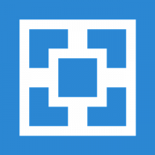
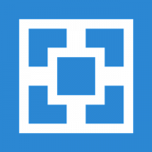
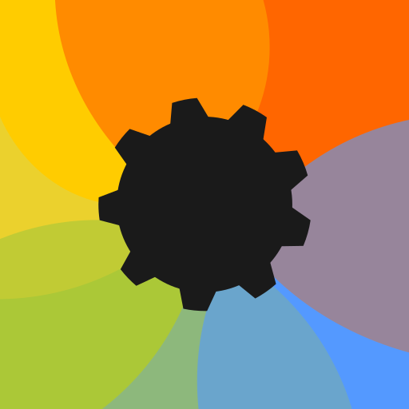
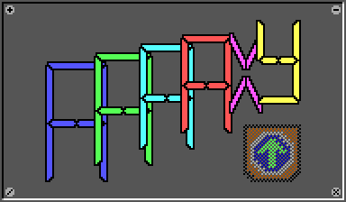
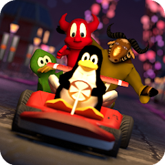
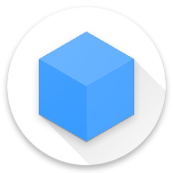

Games
Hier staan aanraders voor games.
Minecraft
Bijna iedereen kent of speelt Minecraft, maar hier zijn nog wat extra tips: gebruik Lunar Client of ATLauncher (FOSS) om Minecraft te spelen. Een client voor Minecraft is iets wat al allemaal aanpassingen heeft gemaakt aan Minecraft, denk aan mods of settings. Een launcher is vanilla (standaard) Minecraft waar je zelf mods aan toe kan voegen. Er zijn er veel meer maar ik vind persoonlijk deze het beste. Ook kan je texture packs of shaders toevoegen om je game mooier te maken als je dat leuk vindt. Dit kan bijvoorbeeld met Iris voor Fabric. Je hebt ook Sodium, dit is een fps booster en is een stuk beter dan vanilla Minecraft of Optifine.
Als je cracked Minecraft wilt (zonder te betalen), zal ik SKLauncher (closed source) aanraden (staat ook op Megathread). Dit is veel veiliger dan TLauncher, want TLauncher is spyware en collecteert gegevens van de gebruiker. Als je een open source cracked launcher wilt, zal ik UltimMC, PollyMC of TL Legacy aanraden. Voor PollyMC en UltimMC (sowieso MultiMC en Prism Launcher) moet je los java installeren. Daarom raad ik de LTS versie van Adoptium aan (Temurin) (FOSS).
Om een server te maken, raad ik Aternos (FOSS) aan.

 


Minesweeper - Antimine (FOSS)
Antimine is een minesweeper game en heeft vele opties.
AAAAXY (FOSS)
"AAAAXY is a nonlinear 2D puzzle platformer taking place in impossible spaces."
LibreSudoku (FOSS)
LibreSudoku is een open source Sudoku game! Ik ga niet uitleggen wat Sudoku is🙂
Flowit! (FOSS)
Flowit! is een gecompliceerd puzzel spel, waarbij je alle vakjes de goede kleur moet geven.
SuperTuxKart (FOSS)
SuperTuxKart is een racing game. Het lijkt op Mario Kart, maar het is op elk platform te downloaden en je kan zelfs online spelen.
1010! Klooni (FOSS)
1010! Klooni is gebaseert op 1010 en het lijkt op een soort van Tetris.
Tier list/top 15
3. Ori and the Will of the Wisps
5. Portal 2
6. Bugsnax
7. The Legend of Zelda: Link's Awakening
8. Hob
9. Minecraft
10. Superliminal
11. A Hat in Time
12. Stray
13. Pokémon


(Gemaakt door Max-Merijn op Tier Maker)